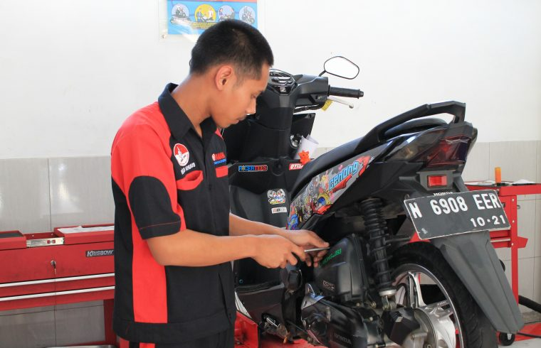

Sekilas Pandang Jurusan TBSM SMKN 1 Kepanjen

.png)
.png)
Profil : Program Keahlian Teknik dan Bisnis Sepeda Moter (TBSM) mempelajari tentang seluk beluk sepeda motor yang didukung oleh sarana dan prasarana sesuai dengan standar industri, mentor-mentor yang ramah dan kompeten, hingga dukungan industri berskala internasional dari segi peralatan hingga pengetahuan tentang teknologi sepeda motor terbaru.
Visi TBSM : Menciptakan lulusan yang kompeten dalam bidang sepeda motor dan memiliki daya saing global yang diiringi dengan keimanan dan ketakwaan terhadap Tuhan Yang Maha Esa serta berkarakter bangsa Indonesia.
Materi Pembelajaran : Sistem Injeksi Sepeda Motor, Over Houl Engine Sepeda Motor, Tune Up Sepeda Motor, Perbaikan Mesin Sepeda Motor, Perbaikan Chasis Sepeda Motor, Perbaikan Kelistrikan Sepeda Motor, Pendidikan Mekanik Senior, dan Pendidikan Berbasis Teaching Factory.
Peluang Kerja : Bekerja di Perusahaan Berskala Internasional, bekerja sebagai mekanik sepeda motor, staff Teknik Perusahaan Sepeda Motor, Berwirausaha bengkel sepeda motor dan banyak lagi.
Kerjasama Dunia Usaha / Dunia Industri : Yamaha Motor Indonesia, Anugerah Cendrawasih Sakti Motor (Motor Happy Group) dan AHASS Motor.
Lomba/Event yang pernah diikuti siswa TBSM (2 tahun terakhir) :
Lomba Kompetensi Siswa (LKS) Wilayah Kerja 3 Bidang Lomba Teknik Sepeda Motor Tahun 2019,
LKS SMK Tingkat Kab. Malang Bidang Lomba Teknik Sepeda Motor Tahun 2018,
Lulusan (Alumni) siswa TBSM : Melanjutkan studi di universitas negeri/swasta, berwirausaha dan bekerja.